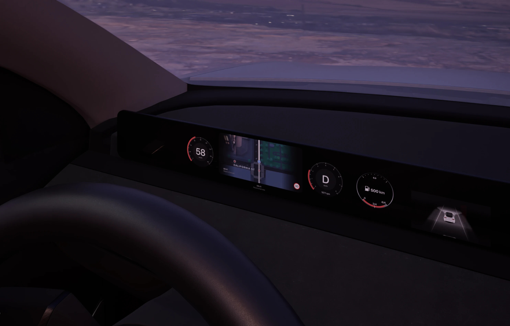
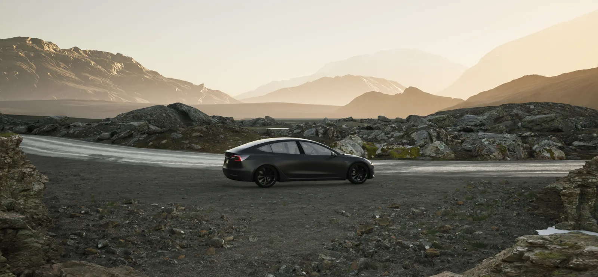

À la suite d’un workshop consacré au futur de la voiture connectée, j’ai imaginé ma propre interface de conduite. Cette exploration personnelle prend la forme d’un tableau de bord panoramique, intégré à l’habitacle et réunissant plusieurs informations du trajet.
Le workshop
Je suis intervenu à L’École de design Nantes Atlantique pour accompagner les étudiants du Master UI/UX Design lors d’un atelier d’une semaine, organisé en partenariat avec Toyota France.
Les étudiants ont proposé leurs visions de la voiture connectée. De mon côté, je les ai accompagnés sur la gestion de projet, avec une attention particulière portée à la conception d’une interface inclusive.
Prolonger la réflexion
À l’issue de l’atelier, j’ai choisi de poursuivre le sujet par une exploration personnelle. J’ai consacré deux jours d’analyse et de réflexion à une proposition d’interface qui imagine l’évolution du poste de conduite dans les années à venir.
Précision importante : c’est un concept personnel, pas une interface développée par Toyota.
Un tableau de bord panoramique
La proposition met en scène un écran qui s’étend sur la largeur de l’habitacle. Les vues présentent notamment la navigation, la vitesse, l’autonomie et des indications liées à la conduite, regroupées dans un même ensemble visuel.
J’ai exploré la place de ces informations dans le champ de vision, ainsi que leur intégration dans l’espace du conducteur et du passager. Les images montrent le concept dans plusieurs ambiances et à différentes échelles.
Le concept en images

Une vue d’ensemble
Une vue de l’ensemble du tableau de bord, du conducteur au passager.

Les informations de conduite
Un aperçu des informations affichées autour du poste de conduite.

Dans l’habitacle
Une mise en situation du concept dans son environnement.

Le véhicule dans son environnement
Une vue extérieure qui accompagne l’exploration de la voiture connectée.
Ce que j’en retiens
Après avoir accompagné le workshop avec Toyota France, j’ai prolongé le sujet par un concept personnel de tableau de bord panoramique. J’ai travaillé sur la hiérarchie des informations et leur place dans le champ de vision, en les intégrant dans des vues de l’habitacle côté conducteur et passager.
En voiture, chaque seconde de regard détourné compte. Avant d’aller plus loin, ce concept devrait être testé en situation de conduite, pour sa lisibilité comme pour sa faisabilité technique.